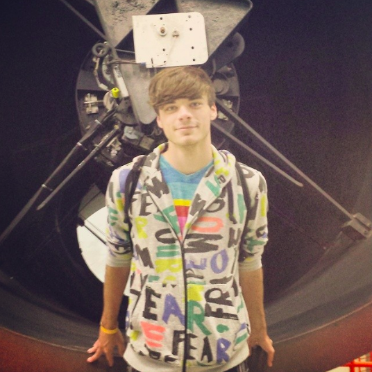
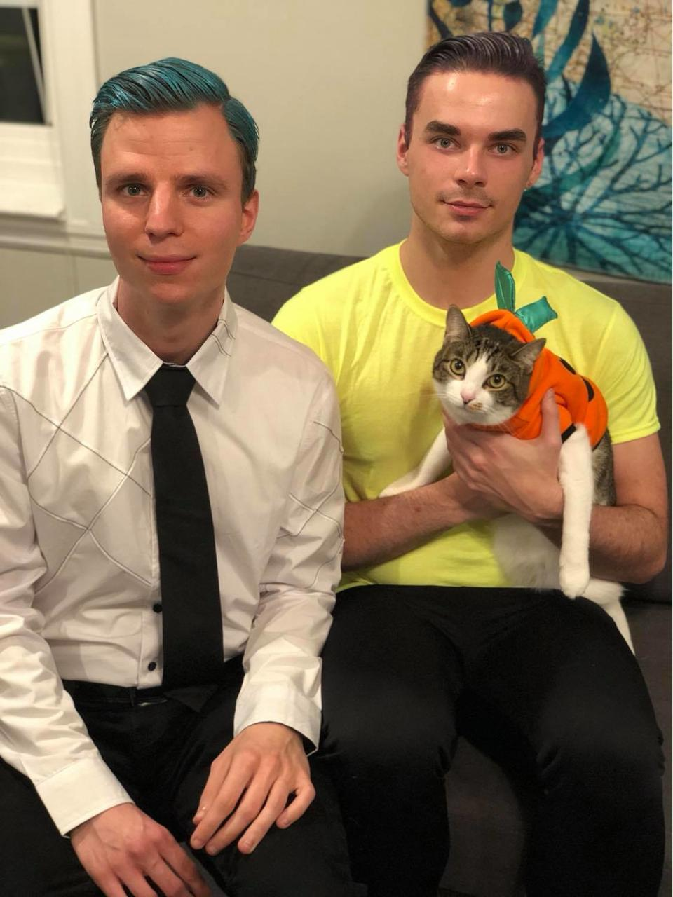

About Me
Nice to meet you!
Here's some more info about me.
I was raised in a relatively small town in Texas.
I went to the University of Texas at Austin for my undergrad, majoring in Physics, Astronomy, and Math.
While there, I was a participant in the Freshman Research Initiative, where I was able to use telescopes at the McDonald Observatory to observe variable white dwarf stars.


I moved up to New York to pursue my Master's degree at Stony Brook University.
One year into the degree, I transferred in to the PhD program.
Along the way, I adopted Pancake.
I'm excited for what the future will bring!